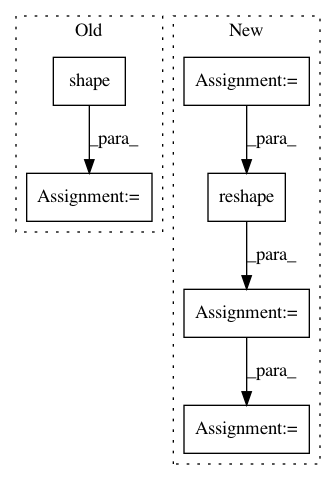

1ea84b7fa9a03781d22837f91683462d823202ea,research/object_detection/predictors/heads/keras_class_head.py,WeightSharedConvolutionalClassHead,_predict,#WeightSharedConvolutionalClassHead#Any#,326
Before Change
class_predictions_with_background)
batch_size = features.get_shape().as_list()[0]
if batch_size is None:
batch_size = tf.shape(features)[0]
class_predictions_with_background = self._score_converter_fn(
class_predictions_with_background)
if self._return_flat_predictions:
class_predictions_with_background = tf.reshape(
After Change
class_predictions_with_background)
batch_size, height, width = shape_utils.combined_static_and_dynamic_shape(
features)[0:3]
class_predictions_with_background = tf.reshape(
class_predictions_with_background, [
batch_size, height, width, self._num_predictions_per_location,
self._num_class_slots
])
class_predictions_with_background = self._score_converter_fn(
class_predictions_with_background)
if self._return_flat_predictions:
class_predictions_with_background = tf.reshape(
class_predictions_with_background,
[batch_size, -1, self._num_class_slots])
else:
class_predictions_with_background = tf.reshape(
class_predictions_with_background, [
batch_size, height, width,
self._num_predictions_per_location * self._num_class_slots
])
return class_predictions_with_background
In pattern: SUPERPATTERN
Frequency: 5
Non-data size: 6
Instances
Project Name: tensorflow/models
Commit Name: 1ea84b7fa9a03781d22837f91683462d823202ea
Time: 2020-11-24
Author: gardener@tensorflow.org
File Name: research/object_detection/predictors/heads/keras_class_head.py
Class Name: WeightSharedConvolutionalClassHead
Method Name: _predict
Project Name: HyperGAN/HyperGAN
Commit Name: c7320c3b31fb300e6bab95b5a2e29212f332f2db
Time: 2018-08-20
Author: mikkel@255bits.com
File Name: hypergan/samplers/batch_walk_sampler.py
Class Name: BatchWalkSampler
Method Name: sample
Project Name: deepmind/sonnet
Commit Name: bc08dbfbe77554bf3458529285003f0bf92eecd3
Time: 2018-07-17
Author: fviola@google.com
File Name: sonnet/python/modules/nets/vqvae.py
Class Name: VectorQuantizer
Method Name: _build
Project Name: tensorflow/models
Commit Name: 1ea84b7fa9a03781d22837f91683462d823202ea
Time: 2020-11-24
Author: gardener@tensorflow.org
File Name: research/object_detection/predictors/heads/class_head.py
Class Name: WeightSharedConvolutionalClassHead
Method Name: predict
Project Name: deepmind/sonnet
Commit Name: bc08dbfbe77554bf3458529285003f0bf92eecd3
Time: 2018-07-17
Author: fviola@google.com
File Name: sonnet/python/modules/nets/vqvae.py
Class Name: VectorQuantizerEMA
Method Name: _build